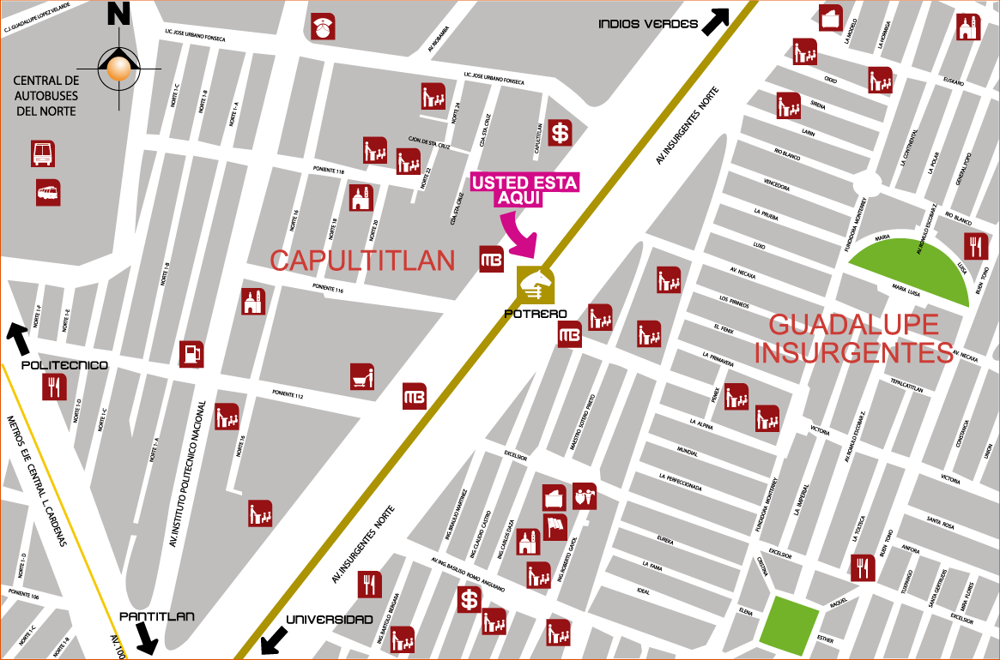

Descripción del ícono
El ícono de la estación es un potro.
Potrero significa: Lugar para la cría de caballos.
En la época de Porfirio Díaz se construye el Hipódromo de Peralvillo, cuyos animales eran enviados a los pastizales ubicados más al norte de la Ciudad de México, razón por la cual se le denomina a esa zona Potrero, por ser el lugar destinado a la cría de caballos.
Servicios y transporte en la estación

Rampa de acceso.

Línea 1 del Metrobús Potrero, ubicado en las avenidas La Victoria, Insurgentes Norte y calle Ingeniero Claudio Castro.
Plano de barrio

Salidas de la estación
- Nororiente: Avenida Insurgentes Norte esquina Av. Victoria, Colonia Guadalupe Insurgentes.
- Suroriente: Avenida Insurgentes Norte casi esquina Excélsior, Colonia Guadalupe Insurgentes.
- Norponiente: Avenida Insurgentes Norte esquina Poniente 116, Colonia Calputitlán.
- Surponiente: Avenida Insurgentes Norte esquina Poniente 112, Colonia Calputitlán.